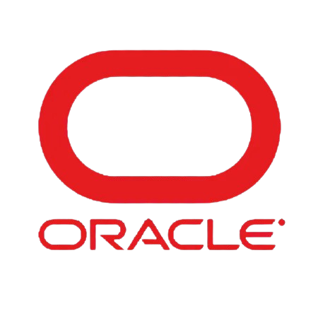

Svashasan Labs
Svashasan Labs

Oracle Cloud InfrastructurePurpose: Show where Oracle Cloud Infrastructure fits in the software-defined vehicle (SDV) lifecycle, what workloads Svashasan OS will bring to OCI as it moves from simulation to OEM fleets, and agree a first 90 days together.
1. The Story in One Line
Svashasan OS runs on the vehicle. Everything that makes it better runs on OCI.
A modern vehicle is only as good as the loop behind it: the data it records, the simulations it is tested against, the models it is trained on, and the updates that reach it safely. That loop lives in the cloud, and it grows with every vehicle on the road.
Svashasan Labs is building that loop now, before our first OEM fleets go live. We want OCI to be its foundation from day one, so that every programme we win lands on OCI by default.
2. Who We Are
Svashasan Labs is an India-based deep-tech company building Svashasan OS, an autonomy-first software platform for electric and software-defined vehicles. It coordinates sensor integration, perception, sensor fusion, localisation, prediction, planning, vehicle-control interfaces, diagnostics, cybersecurity, OTA updates and fleet learning through one modular architecture.
Our thesis: vehicle autonomy is a systems and integration problem, not a collection of separate machine-learning models. OEMs should be able to pick the functions a vehicle programme needs while reusing common infrastructure, interfaces, validation tools and lifecycle management.
Where we are today
| Area | Status |
|---|---|
| Product | Simulation MVP built on ROS 2 |
| Intellectual property | OS kernel architecture patent application filed |
| Security | OTA security workstream with QNu Labs |
| Ecosystem programmes | NVIDIA Inception, DPIIT Startup India recognition, Red Hat Partner Program |
| Customers | In active outreach with OEM CTOs and heads of EV, SDV and research to scope first design-partner pilots |
| Funding | Raising a ₹5.42 Cr pre-seed round |
We are early, and we are choosing our infrastructure partner before our cloud footprint scales, not after it is locked in somewhere else.
3. The SDV Lifecycle, and Where OCI Fits
Click any stage to see what happens there and what OCI does in it.
What happens:
OCI’s role:
Every stage except the vehicle itself is a cloud workload, and every one of them grows with fleet size. That is the opportunity for OCI.
4. The Edge–Cloud Boundary
We are precise about this because OEMs and safety assessors will be. The vehicle never waits for the cloud to make a driving decision. The cloud carries everything that happens over minutes, days and months.
| Function | Vehicle / edge | OCI |
|---|---|---|
| Sensor processing and perception | Yes, real time | Training, evaluation, replay |
| Planning and control | Yes, real time | Scenario testing and regression |
| Vehicle interface and actuation | Yes | Never: no cloud actuation |
| Safety monitoring and fallback | Yes | Fleet-wide analysis of events |
| Software and model updates | Verify, install, roll back | Build, sign, stage, roll out, audit |
| Data | Buffer and filter by policy | Ingest, retain, curate, govern |
5. Reference Architecture on OCI
A first proposal for how Svashasan OS’s engineering and fleet cloud maps onto OCI services. We would like to refine it with Oracle’s Cloud Engineering team.
Design principles we are holding ourselves to
- Real-time stays on the vehicle. Losing connectivity degrades fleet learning, never vehicle safety.
- Every update is signed, staged and reversible. Keys in a managed vault, atomic install on the vehicle, automatic rollback, audit of what went where.
- Data minimisation by policy. Vehicles send only what the policy allows; personal data is filtered or protected before it leaves the vehicle.
- Every result is reproducible. Dataset, scenario, model and software versions are recorded for every run, so any claim can be re-run later.
- Residency and recovery. Indian vehicle data stays in India, with a second Indian region for disaster recovery.
- Standards we design toward. ISO 26262 and ISO 21448 for safety, ISO/SAE 21434 and UNECE R155/R156 for cybersecurity and software updates. These shape the architecture now; certification comes with real programmes.
6. Workload Profiles for OCI
These are the workload shapes Oracle’s engineering team would be designing for. Each one is a different OCI building block, and each grows on its own axis.
| Workload | What it looks like | OCI building block | What grows it |
|---|---|---|---|
| Simulation farm | Bursty, parallel; thousands of short scenario runs per release | OKE with GPU and CPU node pools | Release frequency and scenario library size |
| Model training | Long GPU jobs reading large datasets at high throughput | GPU compute, File Storage cache | Model count and dataset size |
| Fleet ingestion | Continuous small telemetry plus large periodic drive-log uploads | API Gateway, Streaming, bulk upload | Vehicles × hours driven |
| Data lake | Write-heavy, mostly cold after weeks, must be kept for audit | Object Storage tiers with lifecycle policies | Fleet size × retention period |
| Triage and mining | Batch and streaming jobs over the lake | Data Flow (Spark) | Data volume and event types |
| Metadata and lineage | Many small, linked records: runs, scenarios, models, vehicles, releases | Autonomous Database | Every run, release and vehicle |
| Release and OTA | Security-critical, audited, staged rollouts | Vault, release pipeline, distribution | Vehicles under management |
7. Why Vehicle Data Compounds
Automotive data does not plateau. Each new vehicle adds hours of driving, and the retention needed for safety evidence and audit keeps older data in the lake. Use the estimator below with your own assumptions.
The defaults are illustrative placeholders, not measurements. Raw logging rates depend heavily on the sensor set (camera count, resolution, radar, lidar) and recording policy. We will replace them with measured rates from our own logging rig.
8. What OCI Gains
A credit programme gives a startup a head start. This partnership gives OCI something more durable: a software vendor that brings automotive workloads with it.
For OCI India’s business
- Consumption that compounds. Every OEM programme Svashasan wins adds a fleet, a data lake, a simulation farm and an OTA service, and none of those shrink while the vehicles are on the road.
- ISV pull-through into automotive accounts. OEMs and Tier 1s adopting Svashasan OS get a reference architecture that already runs on OCI. The cloud decision arrives with the software.
- An Indian SDV reference story. A homegrown vehicle software company running its full engineering and fleet loop on OCI, in Indian regions, is a story OCI can take to every automotive customer.
- A showcase for OCI GPU and data services. Simulation and training are exactly the AI-infrastructure workloads OCI is investing in.
- Breadth across Oracle’s stack. Compute, GPU, storage, streaming, Spark, Autonomous Database, Vault and Data Science, not a single service.
- A future Marketplace listing. Svashasan’s fleet and OTA tooling as a deployable offering for OCI customers in mobility.
For OCI Cloud Engineering
- A demanding, well-defined reference workload: high-throughput training, elastic simulation, multi-terabyte ingestion, tiered retention, and disaster recovery across Indian regions.
- A partner that designs with you from the start, so the architecture is right before the data volumes arrive, not migrated afterwards.
- A joint reference architecture for SDV fleet data and simulation that your team can reuse with other automotive customers.
The flywheel
Svashasan builds its lifecycle on OCI
↓
OEM evaluates Svashasan OS
↓
Reference architecture already on OCI
↓
Pilot fleet lands on OCI by default
↓
Data, simulation and OTA grow with the fleet
↓
Proven automotive reference for OCI India
↓
Next OEM and Tier 1 conversations, with Oracle at the table
↓
More programmes for Svashasan, more workloads for OCI
9. How Consumption Grows
We are deliberately not putting revenue numbers on this chart. The honest version is a commitment: as each stage arrives, it lands on OCI, and we will share our actual usage forecast at every stage.
10. Why OCI, From Our Side
- GPU infrastructure for AI workloads. Simulation and training are our largest future compute costs.
- Indian regions. Mumbai and Hyderabad give us data residency for Indian vehicle data and a natural primary and disaster-recovery pair.
- Enterprise relationships. Oracle already works with large Indian enterprises, including in manufacturing and mobility. A credible infrastructure partner shortens an OEM’s risk review.
- A complete data platform. Storage, streaming, Spark and a managed database in one place, rather than stitching vendors together.
- Engineering partnership. Access to Cloud Engineering at the design stage is worth more to us than credits alone.
11. Responsibilities
| Layer | Svashasan Labs | Oracle (OCI) |
|---|---|---|
| Svashasan OS and on-vehicle runtime | Primary owner | — |
| Perception, fusion, planning models | Primary owner | GPU infrastructure |
| Simulation and scenario library | Primary owner | Elastic compute and orchestration |
| Fleet data pipeline | Design and operation | Ingestion, streaming, storage services |
| Data residency and recovery | Policy and requirements | Regions, replication, recovery services |
| OTA release and signing | Primary owner | Vault, distribution infrastructure |
| Reference architecture | Workload definition | Architecture review and validation |
| OEM and Tier 1 relationships | Software relationship | Infrastructure relationship |
| Go-to-market | Joint case study, reference design | Introductions, co-sell when eligible, Marketplace |
12. Preferred, Not Exclusive
We will be straightforward about this. Some OEMs will mandate their own cloud, and we have to support them to win the programme.
OCI becomes Svashasan’s default and reference cloud. Every deployment we control runs on OCI. Every OEM we meet sees an architecture that already runs on OCI. Where an OEM mandates another cloud, our software stays portable.
This keeps the partnership honest, and it is the version that actually wins OEM programmes. Programmes we cannot win help neither of us.
13. What We Are Asking For
| Horizon | Ask | Why it matters |
|---|---|---|
| Now | Join Oracle’s startup programme for OCI credits, and confirm the route available in India | Lets us build simulation and training on OCI from the start |
| Now | A named Cloud Engineering architect | Gets the architecture right before data volumes arrive |
| 60–90 days | A joint architecture workshop and a written reference architecture for SDV fleet data and simulation on OCI | A reusable asset for both of us with every automotive customer |
| 60–90 days | Clarity on the milestones for Oracle’s partner and ISV track | Tells us exactly what to prove next |
| 12 months | Introductions to automotive and mobility accounts, and co-sell once we have a paid pilot | Turns the reference architecture into programmes |
14. The First 90 Days
| Weeks | Milestone | Output |
|---|---|---|
| 0–2 | Programme enrolment and architect assigned | OCI tenancy set up correctly from the start |
| 3–6 | Joint architecture workshop | Agreed reference architecture and landing zone |
| 5–9 | Simulation pipeline running on OCI | Scenario runs on OKE with GPU nodes, cost per scenario measured |
| 7–11 | Training pipeline running on OCI | One perception model trained and evaluated end to end |
| 10–12 | Review together | Usage report, lessons learned, draft joint reference architecture |
How we will measure it together
- Scenario runs per day the farm can sustain, and cost per scenario run
- Time from a drive log arriving to the same moment being replayable in simulation
- Training throughput (data read rate to the GPUs) and time per training run
- Release time from commit to a signed, staged update
- Actual OCI usage against our forecast, shared monthly
15. Questions for Oracle
- Is the Oracle Startup Growth Engine, or another startup programme, available to Indian startups today, and what is the route?
- Which NVIDIA GPU shapes are available in the Mumbai and Hyderabad regions, and what does capacity look like for bursty workloads?
- What does Oracle’s partner and ISV track require of a company at our stage?
- Which reference patterns does Cloud Engineering already use for high-throughput training storage and large-scale ingestion?
- Which automotive and mobility customers would value a joint SDV reference architecture?
16. Next Step
Let’s agree a date for the architecture workshop before we leave this call.
Svashasan Labs will send a written summary and a draft workload forecast within three working days.
namaste@svashasan.com | svashasan.com | research.svashasan.com